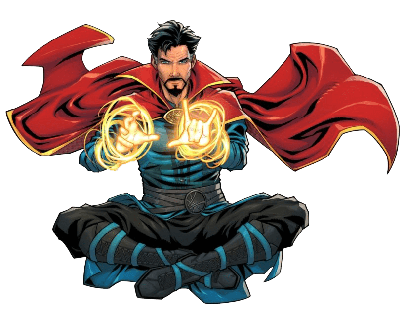
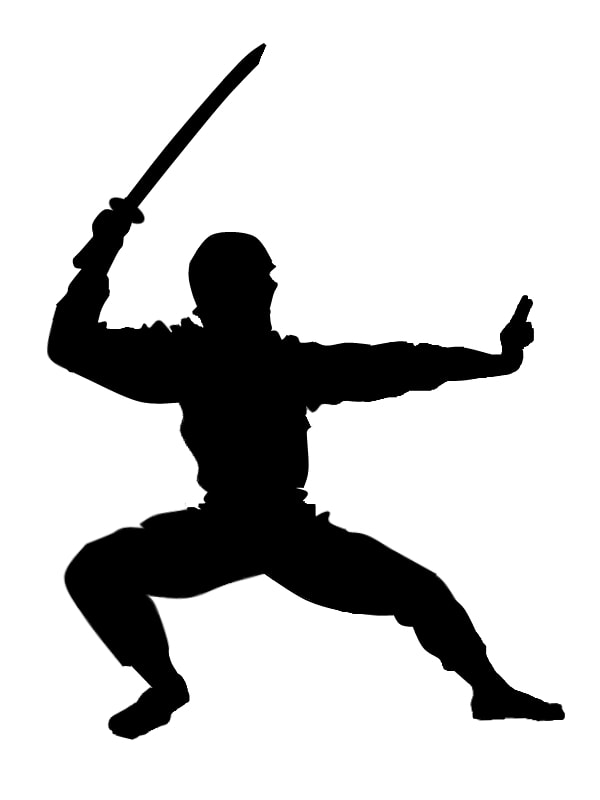
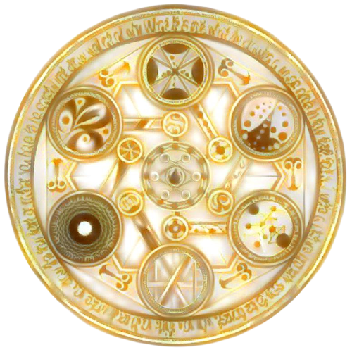

Docteur Lestrange

Médecin et maître des arts mystiques, vous êtes l’un des plus puissants magiciens de la planète aujourd’hui !
Cette nuit, alors que vous dormiez paisiblement dans votre manoir new-yorkais, un bruit de lutte et de verre brisé vous réveille : des intrus ont pénétré chez vous !
Ceci est un scénario de 30min pour le jeu de rôle Run. Die. Repeat.
de Labrys Games traduit ici en français (PDF, 38 Ko).

Version PDF: @itch.io
Qui etes-vous ?
Steven Lestrange, un talentueux chirurgien devenu maître des arts occultes suite à un tragique accident de voiture. Vous êtes capable de créer, à volonté et n’importe où, des disques magiques volants, dont vous pouvez vous servir comme boucliers, comme armes ou comme portails en vous déplaçant à travers, de l’un à l’autre. Votre grand manteau rouge vous permet de léviter, et grâce à la Pierre du Temps à votre cou vous évitez la mort en revenant automatiquement dans le passé, à l’instant de votre dernier réveil. Cela vous coûte néanmoins beaucoup d’énergie, et vous n’avez qu’une demi-heure devant vous avant de vous écrouler de fatigue…
Les intrus
Des ninjas manipulant la magie de l’eau sont entrés par le toit du manoir ! Ils ont déjoué les protections magiques et dérobé le bâton infini dans votre Galerie des Artefacts
Les ninjas sont armés de shurikens et de katanas. La magie de l’eau leur permet de transformer des objets ou leur propre membres en eau (et ainsi éviter des dommages) ou de projeter des jets d’eau sous pression. Ils peuvent s’accrocher n’importe où, même à la verticale, et se déplacent extrêmement vite par bonds de 100m, si rapides qu’ils semblent se téléporter.
Leur véritable objectif est d’attirer le Docteur jusqu’au grand étang de Central Park, où leur magie de l’eau est renforcée et où ils ont préparé un piège pour lui voler l’amulette du Temps !
Regle speciale
Chaque joueuse, une seule fois durant la partie, peut intervenir durant le tour d’un autre : un portail s’ouvre pendant quelques secondes, et le Dr Lestrange d’un monde parallèle intervient pour prêter main forte au Dr Lestrange de cette réalité ! Cela confère un bonus de +3 au prochain jet de la joueuse active, ou peut lui permettre d’éviter la mort suite à un jet raté.
Obstacles
Le Manoir
Une maison victorienne à deux étages, avec un grand espace central vertical ouvert, desservi par deux grands escaliers en bois. La lumière de l’aube éclaire les lieux à travers de grandes fenêtres circulaires en fer forgé. L’intérieur est bien plus grand que ne l’est le bâtiment à l’extérieur. L’action débute au 2e étage, où la chambre du Docteur donne sur une galerie hébergeant nombre d’armes & artefacts magiques.
Le ninja qui a volé le bâton infini vient de s’enfuir par le toit, et 2 derniers ninjas barrent la route au Docteur. De plus, Wang, le bibliothécaire et fidèle assistant du Docteur, est immobilisé par 2 ninjas. La joueuse doit choisir entre poursuivre le voleur, ou prêter main forte à Wang. Si elle choisi cette deuxième option, le voleur disparait hors de vue. Il ne reste plus qu’à revenir dans le temps, où à employer un sort magique pour le localiser (à Central Park) si les joueuses y songent et réussissent le jet.
Manhattan
Une fois sorti par la grande lucarne du toit du manoir, le ninja voleur se met à traverser la ville en employant le bâton infini comme une gigantesque perche télescopique. D’autres ninjas postés sur les gratte-ciels couvrent sa fuite en bombardant le Docteur de shurikens, en employant leur magie ou en lui sautant dessus, katana à la main ! Il serait alors bien trop lent pour le Docteur de se déplacer au sol. Durant la course-poursuite, les ninjas n’hésiteront pas à faire des dégâts aux gigantesques gratte-ciels pour entraver la progression du Docteur.
Central Park
Le ninja voleur fini par « atterrir » à Central Park, où il se prépare à faire face au Docteur, debout au milieu du plus grand étang du parc. De nombreux badauds en balade dans le parc assistent à la scène. Dès que le Docteur s’avance au dessus de l’eau, un très grand nombre de signes kabbalistiques se mettent à briller, tracés sur des arbres autour de l’étant et à l’aide de pierres runiques sous l’eau. La surface de l’étang, initialement calme, se met en mouvement de manière spectaculaire : un puissant sortilège se déclenche, visant l’amulette du Temps au cou du Docteur, et le privant de tout pouvoir, en dehors de revenir dans le passé. Le ninja choisi alors ce moment pour attaquer le Docteur avec le bâton infini, et tenter de lui voler la Pierre du Temps ! Il est dans son élément : il glisse sur l’eau comme un hors-bord, et l’emploiera pour se défendre et attaquer, sous forme de murs ou de vagues d’eau.
Conseils a la MJ
Prenez le temps de détailler les capacités du Docteur au début, pour servir de terreau à l’imagination de vos joueuses.
Wang
Si les joueuses portent assistance à Wang avant de poursuivre le voleur, annoncez-leur qu’elles auront désormais un bonus de +2 à tous leurs jets où le Docteur œuvre de concert avec Wang lors d’une action, en lui communiquant des instructions.
Effets speciaux
Donnez une dimension dantesque à la course poursuite et aux sortilèges :
- toutes les plaques d’égout de la ville sont projetées contre le Docteur par des jets d’eau souterrains
- des gratte-ciels se plient ou se liquéfient, formant un torrent
- des ninjas entament un rituel en formant un cercle au sommet des immeubles, et un tsunami apparait à l’horizon
La spectaculaire dimension miroir du film de 2016 peut servir d’inspiration. Je vous déconseille néanmoins de « tordre » la ville à ce point, sous peine de perdre vos joueuses spatialement.
Interception
Dans la logique du scénario, le Docteur ne peut empêcher le ninja voleur d’atteindre Central Park, les autres ninjas couvrant sa fuite. Si néanmoins les joueuses réussissent à l’immobiliser, voir à récupérer le bâton infini, voici quelques « plans B » :
- un sortilège des ninjas fait pencher tous les gratte-ciels pour former un gigantesque tobogan vers Central Park.
- le ninja poursuivi par les airs et son bâton étaient des leurres ! Le véritable voleur s’est rendu à Central Park par les égouts.
- une série de gestes hypnotiques du ninja voleur plonge le Docteur dans un micro-sommeil. Pour celui-ci il ne s’agit que d’un clignement d’oeil, mais les ninjas et le bâton ont disparus (à Central Park). Dans la logique de la Pierre du Temps, les joueuses démarrent désormais leur tour à cet instant.
Que faire lorsqu’un jet de passe magique rate ?
« Râté, il ne se passe rien » n’est pas très amusant et ne fait pas avancer l’action. D’un autre côté, difficile parfois de trouver un bonne raison de tuer le Docteur. Voici donc quelques idées :
- le sort fonctionne, mais tourne à son désavantage. Par exemple, un ninja emploie un portail ouvert pour atteindre le Docteur et le blesser mortellement.
- le sort est contrecarré activement par la magie de l’eau des ninjas. Par exemple si le Docteur fait apparaître un objet, il est en transformé en eau. Ou bien un portail qui se retrouve bloqué par un mur de glace.
- le sortilège était trop ambitieux, et permet à Dormammu de s’inviter, une entité maléfique très puissante. Comme dans le film, introduisez un léger comic relief en expliquant comment Dormammu trucide le Docteur de manière différente à chaque fois.
Je vous recommande notamment d’employer cette technique si le Docteur tente de basculer dans la dimension miroir, pour l’éviter : même en cas de réussite sur un 6, faites intervenir Dormammu pour décourager les joueuses de poursuivre cette branche narrative.
Bon jeu ! 🏃 ☠️ ♻

Ce scénario de Lucas Cimon (@chezsoi.org) est publié sous licence Creative Commons Attribution 4.0. Les fichiers sources de ce PDF sont disponibles sur GitHub. - v1.0
Inspirations: Le film Doctor Strange de 2016 (concept arts), Naruto pour les ninjas, la légende de Sun Wukong pour le bâton magique.
Merci aux illustrateurs qui ont placé leur magnifique travail sous licence Creative Commons :
- Doctor Strange from PNG ARTS - CC 4.0 BY-NC
- Ninja by Ms. Powell - CC BY 3.0
- magic circle 2 by NNao - CC BY-NC 3.0 then DeepDreamed
- Dormammu by Bohy - CC 3.0 BY-NC
- Dr Strange from Pixabay
Polices employées : Elementary Gothic par Bill Roach (sous licence SIL Open Font) & Rajdhani.
Un grand merci également aux playtesteurs : Laetitia, Jérôme & Jordan de l’Auberge des Rêveurs.
Merci enfin aux développeurs des logiciels libres employés : le navigateur Firefox, le logiciel de dessin Gimp, l’éditeur de texte Notepad++, le lecteur de PDF Sumatra PDF, le language de programmation Python, les bibliothèques de code markdown-it, livereload & Puppeteer.